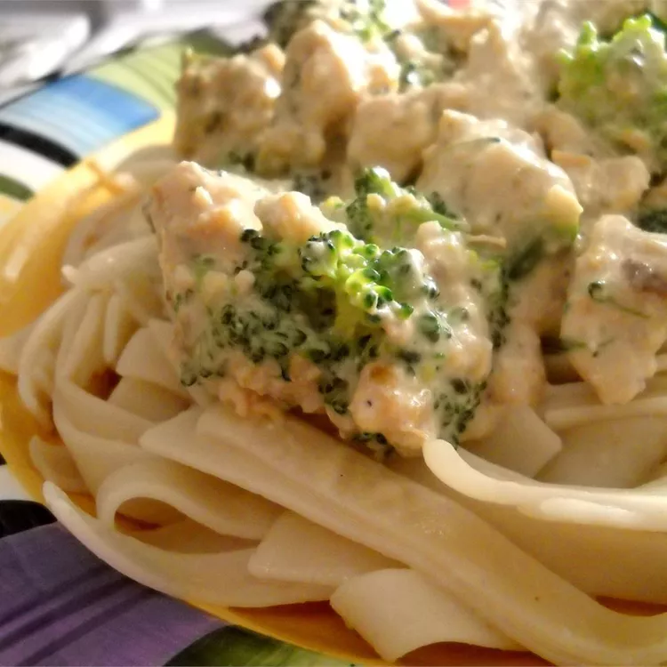

Chicken Stroganoff

A delicious Chicken Stroganoff for dinner
Ingredients
- 1 tablespoon chopped carrot
- 1 tablespoon chopped parsley
- 1 tablespoon chopped onion
- 1 clove garlic
- ¼ teaspoon lemon zest
- 1 teaspoon salt
- ¼ teaspoon ground black pepper
- 4 skinless, boneless chicken breast halves - cubed
- 2 tablespoons butter
- 4 ounces Neufchatel cheese
- 8 ounces natural cream of chicken soup
- 1 cup frozen peas
Steps
- Combine the carrot, parsley, onion, garlic, lemon zest, salt, and ground pepper in a small blender or food processor. Process until finely chopped and transfer to slow cooker. Add chicken and butter and mix. Cook on Low for 5 to 6 hours.
- Stir in Neufchatel cheese, chicken soup, and peas. Cook on High until heated through, about 30 minutes.
Back to Main menu